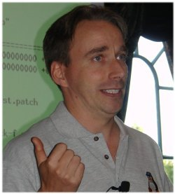
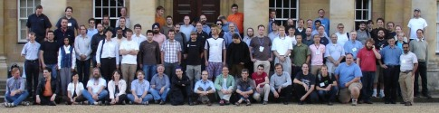

The 2007 Kernel Summit

The 2007 version of the Linux Kernel Developers' Summit was held on September 5 and 6 in Cambridge, UK. Approximately 80 developers at this invitation-only event held discussions on a wide variety of topics covering all aspects of kernel development. As usual, LWN editor Jonathan Corbet was there. Reports from the sessions will appear below as they are written.
Day 1
- The distributor panel. Kernel
maintainers from four distributors attended a session meant to be a
forum where they could tell the community how the process could be
improved from their point of view. In the event, much of the
information flowed in the other direction, with community developers
expressing frustration with a number of distributor practices.
- Mini-summit reports. Reports from
mini-summits covering power management, filesystems and storage,
virtual memory, and virtualization held in the months prior to the
main kernel summit.
- The greater kernel ecosystem and
user-space APIs. A discussion of how the kernel presents
interfaces to user space and the low-level software which helps with
this task. Also covered here is the session on a proposal for a
formal review process for new system calls.
- Kernel quality. In the session he led
on this topic, Andrew Morton was unable to say whether he thought our kernel
releases were getting better or worse. But he had no doubt that we
could be doing a better job than we are now.
- Hardware support and the i386/x86_64 merger. This was a discussion of the state of drivers for various difficult chipsets; it included AMD's important announcement of the opening of its graphics processors. There was also a session on the question of whether the i386 and x86_64 architecture trees should be merged.
Day 2
The preparation of reports from the second day is being somewhat delayed by your editor's travel. They will show up here as they become available.
- The customer panel. An interesting
discussion of customer needs by representatives from Dreamworks,
Credit Suisse, and the Linux Foundation.
- Realtime and syslets.
What is the status of the realtime patch set, and what's next for
syslets?
- Scalability. Issues for
people trying to run Linux on very large and very small systems.
- Memory management. Discussions on
large page support, test cases for memory management patches, and
letting applications help with memory pressure.
- Containers. What remains to be done
to have a complete containers implementation in the mainline kernel.
- Developer relations and development
process. How can the community bring in more developers and avoid
driving away those who are here now? This question was addressed,
along with a number of nuts-and-bolts issues relating to how the
development process works.
- Closing session. The final session of the 2007 kernel summit was about the kernel summit itself. Was this event what the attendees had hoped for, and how should things be done in the future?
The group picture
How could there be a kernel summit without a group picture? Here is (most of) the group in front of the Downing College dormitory where many of us stayed:

This photo is available in the following forms:
- Medium resolution (1200x500)
- Full resolution (2573x1100)
By popular demand, we also have an annotated version of the full-resolution image with names assigned to as many faces as possible.
Thanks to Michael Kerrisk for operating your editor's camera, allowing him
to be in the group picture for the first time.
| Index entries for this article | |
|---|---|
| Kernel | Kernel Summit |
| Conference | Kernel Summit/2007 |